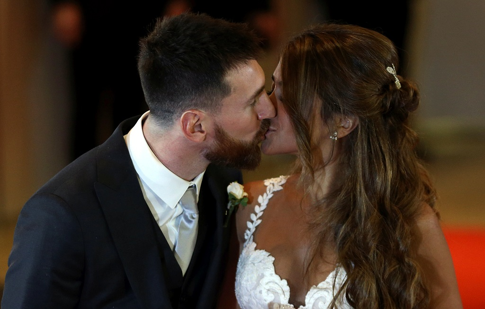

Welcome
A civil ceremony for Messi, 30, and Antonela Roccuzzo,
29, was held at a luxury hotel in the city of Rosario.
Football stars and celebrities were among the 260 guests,
with hundreds of police deployed for the event.
Messi, the Argentina and Barcelona forward, met Roccuzzo as a
child before he moved to Spain aged just 13.
Among the guests at Friday's wedding were Messi's Barcelona
teammates Luis Suárez, Neymar, Gerard Piqué and his wife,
Colombia's pop star Shakira. A number of guests flew into Rosario on private jets.
Argentina's Clarín newspaper has variously called the wedding "the
wedding of the year" and "the wedding of the century"